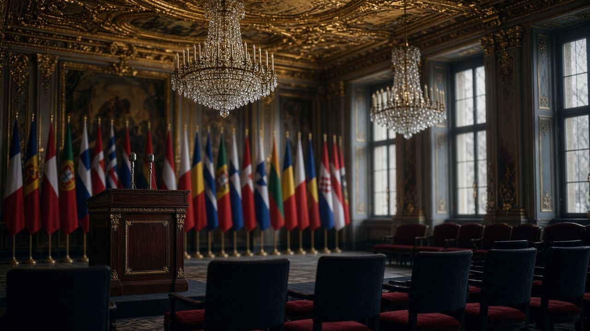

Главная · Блок I · 2007–2015 · Досье 01



Зал конференции по безопасности. Мюнхен, атмосферная реконструкция.
Досье 01 / 10 · Видеовыступление
Речь Владимира Путина на Мюнхенской конференции по безопасности
Поворотно-историческое выступление, ставшее точкой отсчёта современного геополитического противостояния. Президент России впервые на высшем уровне жёстко раскритиковал однополярную модель мира, неконтролируемое применение силы в обход ООН и непрерывное продвижение военной инфраструктуры НАТО на Восток. В речи сформулированы фундаментальные условия безопасности Москвы и заложены основы её дальнейшего внешнеполитического курса.
Краткий конспект
- Однополярный мир — «один хозяин, один суверен» — неприемлем и невозможен; он разрушителен даже для самого гегемона.
- Применение силы легитимно только по мандату ООН; НАТО и ЕС не вправе подменять Организацию Объединённых Наций.
- Расширение НАТО на восток не связано с модернизацией альянса и является провокацией, снижающей взаимное доверие.
- Западные гарантии 1990 года («не размещать войска НАТО за пределами территории ФРГ») не выполнены.
- США вышли из Договора по ПРО, размещают гибкие передовые базы у российских границ, стимулируя гонку вооружений.
- Россия с тысячелетней историей сохранит независимую внешнюю политику и не примет новые разделительные линии в Европе.
Полный конспект. Главные мысли
Контекст
10 февраля 2007 года на 43-й Мюнхенской конференции по безопасности глава российского государства впервые выступил с программной речью. К этому моменту за плечами были две волны расширения НАТО (1999 и 2004), выход США из Договора по ПРО (2002), операция НАТО против Югославии (1999) и война в Ираке (2003). Речь стала публичным разрывом с иллюзией «конца истории» и партнёрства 1990-х.
Однополярная модель
Путин определяет однополярный мир как систему с одним центром власти, силы и принятия решений. Такая конструкция, по его словам, не только неприемлема для остальных, но и невозможна в современном мире: она порождает нестабильность, игнорирует суверенитет и «разрушает самого суверена изнутри». Односторонние силовые акции не решают проблем, а создают новые очаги.
Следствие однополярности — ощущение беззащитности: «никто не чувствует себя в безопасности», потому что международное право перестало быть «каменной стеной».
Право силы и ООН
Единственный легитимный механизм применения военной силы — Устав ООН. Подмена ООН структурами НАТО или ЕС объявляется недопустимой. Критике подвергается «почти не сдерживаемое гипертрофированное применение силы» Соединёнными Штатами.
НАТО и гарантии 1990 года
Расширение альянса, утверждает Путин, не имеет отношения ни к модернизации НАТО, ни к безопасности Европы. Это «серьёзная провокация», снижающая доверие. Риторический вопрос: «против кого это расширение?»
Приводится цитата генерального секретаря НАТО Манфреда Вёрнера (Брюссель, 17 мая 1990 года): готовность не размещать армию НАТО за пределами германской территории даёт Советскому Союзу «твёрдую гарантию безопасности». «Где эти гарантии сегодня?»
Отдельно — американские «гибкие передовые базы» численностью до пяти тысяч человек, выдвинутые к российским границам, и противоракетный щит в Европе.
Новые стены вместо Берлинской
Камни Берлинской стены давно разошлись на сувениры, но Западу ставятся в вину попытки возвести новые — пусть виртуальные — разделительные линии через континент. Падение стены стало возможным в том числе благодаря выбору российского народа в пользу открытости; этот выбор, по мысли оратора, не должен вознаграждаться окружением.
Независимый курс
Заключительный аккорд: Россия — страна с историей более тысячи лет, почти всегда проводившая самостоятельную внешнюю политику. «Мы не собираемся менять эту традицию сегодня». Мюнхенская речь фиксирует «красные линии» за пятнадцать лет до 2022 года и задаёт рамку, в которой Кремль впоследствии интерпретирует и Бухарест-2008, и Минск, и Стамбул.
Ключевые цитаты
Однополярная модель не только неприемлема, но и невозможна в современном мире. […] Это мир одного хозяина, одного суверена. И в конечном итоге это губительно не только для всех, кто находится в рамках этой системы, но и для самого суверена, потому что разрушает его изнутри.
В. В. Путин, Мюнхен, 10.02.2007
Думаю, очевидно, что расширение НАТО не имеет никакого отношения к модернизации самого альянса либо к обеспечению безопасности в Европе. Напротив, это серьёзная провокация, снижающая уровень взаимного доверия.
Там же
Первоисточник не встроен: это архив конспектов. Смотрите оригинал.
Открыть YouTube| Все материалы | 02. Лекция Джона Миршаймера «Why is Ukraine th… → |